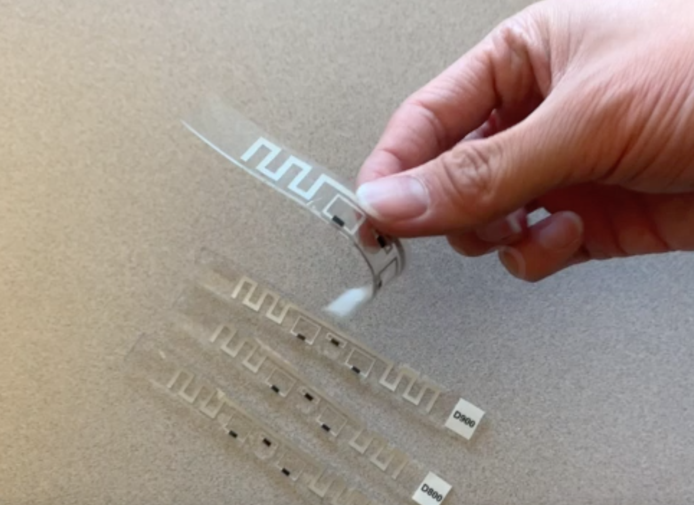

Project: Towards Battery-Free Wireless Communication and Sensing
|

|
This project aims to ask: Can we connect to battery-free devices over extremely long distances? We develop the state-of-the-art longest range connectivity solution for completely battery-free commercial RFID tags, by exploiting collaboration between many distributed RFID readers. We explore several opportunities that such a system can produce. Imagine being able to track the location of every object around you over extended distances, by simply attaching a battery-free sticker. The WiTech lab's research has developed solutions for smart infrastructure monitoring, gesture-based interfaces and on-body sensing using battery-free networks. |
Video Highlight
Publications
- Osprey: A mmWave Approach to Tire Wear Sensing, Akarsh Prabhakara, Vaibhav Singh, Swarun Kumar and Anthony Rowe, MobiSys 2020 [WEBSITE]
- Osprey Demo: A mmWave Approach to Tire Wear Sensing, Akarsh Prabhakara, Vaibhav Singh, Swarun Kumar and Anthony Rowe, MobiSys 2020 [WEBSITE]
- Poster - NoFaceContact: Stop Touching Your Face with NFC, Junbo Zhang and Swarun Kumar, MobiSys 2020 [WEBSITE]
- Poster: Does Ambient RF Energy Suffice to Power Battery-free IoT?, Atul Bansal, Swarun Kumar and Bob Iannucci, MobiSys 2020 [WEBSITE]
- RFID Tattoo: A Wireless Platform for Speech Recognition , Jingxian Wang, Chengfeng Pan, Haojian Jin, Vaibhav Singh, Yash Jain, Jason Hong, Carmel Majidi and Swarun Kumar, UbiComp 2020 [PAPER] [WEBSITE]
- Silver-Coated PDMS Beads for Soft, Stretchable, and Thermally Stable Conductive Elastomer Composites , Chengfeng Pan, Yun Sik Ohm, Jingxian Wang, Michael J. Ford, Kitty Kumar, Swarun Kumar, and Carmel Majidi, ACS applied materials and interfaces 2019
- Sozu: Self-Powered Radio Tags for Building-Scale Activity Sensing , Yang Zhang, Yasha Iravantchi, Haojian Jin, Swarun Kumar, and Chris Harrison, UIST 2019 [PAPER] [WEBSITE]
- Pushing the Range Limits of Commercial Passive RFIDs , Jingxian Wang, Junbo Zhang, Rajarshi Saha, Haojian Jin, Swarun Kumar, NSDI 2019 [PAPER] [WEBSITE]
- WiSh: Towards a Wireless Shape-aware World , Haojian Jin, Jingxian Wang, Zhijian Yang, Swarun Kumar, Jason Hong, MobiSys 2018 [PAPER] [WEBSITE]
- Towards Wearable Everyday Body-Frame Tracking , Haojian Jin, Zhijian Yang, Swarun Kumar, and Jason Hong, UbiComp 2018 (Best Demo Honorable Mention) [PAPER] [SLIDES] [WEBSITE]
Project Participants
- PI: Swarun Kumar
- Students: Jingxian Wang, Haojian Jin and Junbo Zhang
- Collaborators: Prof. Jason Hong, Prof. Carmel Majidi and Prof. Chris Harrison